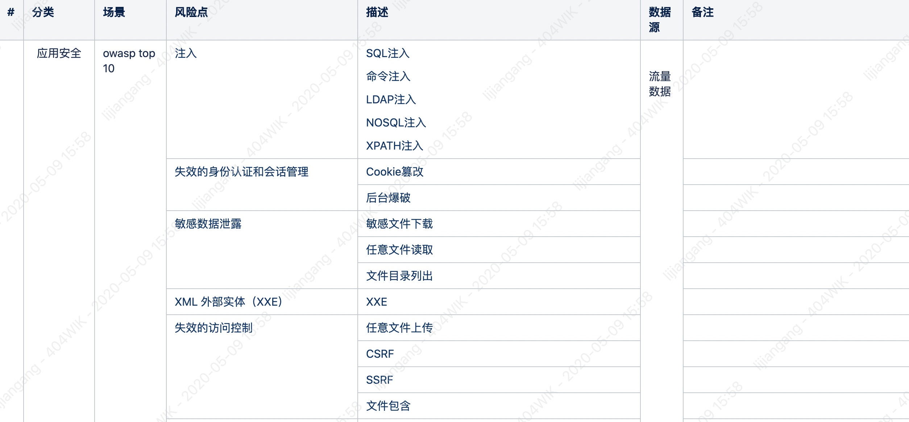
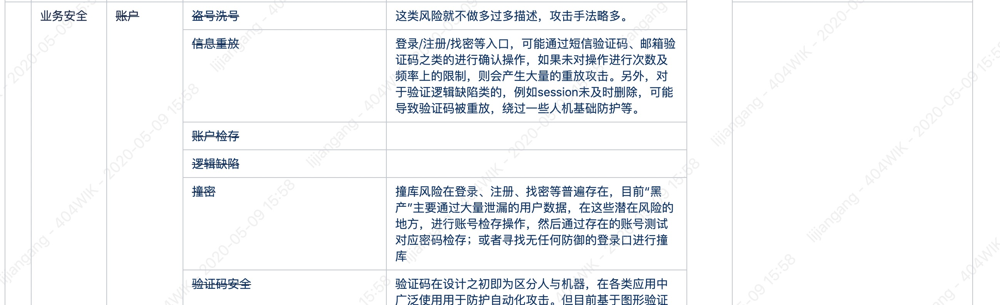
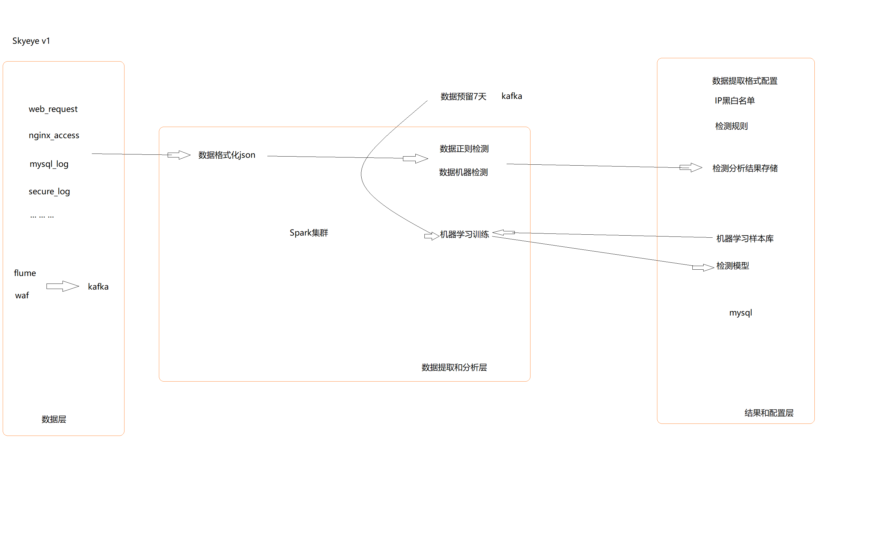

数据安全分析
安全现状
当前互联网企业存在很多业务风险，有些风险（比如薅羊毛）虽然没有sql注入漏洞利用来的直接，但是一直被羊毛党、刷单党光顾的企业长期生存下来的几率会很低！
账号：垃圾注册、撞库、盗号等
交易：盗刷、恶意占用资源、篡改交易金额等
活动：薅羊毛
短信：短信轰炸
web攻击：webshell, 注入, XSS等
隐私保护：密码，地址，手机等
安全大数据产线相关产品，通过对业务系统进行多个维度的日志数据采集，对数据解析、与场景和知识关联计算，以帮助用户对安全事件进行规划预防、实时监视、违规响应、追踪溯源，提取无序数据中的深层价值，消除信息孤岛，定位未知风险，制定防御阈值，协同完成安全能力的自动化安全编排、将安全威胁从应急响应升级为持续响应。
此外，通过高效的大数据处理能力，助力企业用户明确安全基线和风险边界，基于场景构建业务安全模型，秒级发现威胁事件，持续应对安全威胁，提供有价值的决策建议。
数据安全治理核心是围绕数据内容和价值本身进行，通过在数据收集、存储、使用、分发、销毁全生命周期过程中的内容识别、分级分类、策略制定、过程监管、审结稽查，实现数据资产的有效管理和风险规避，并为各行业用户提供专业的安全咨询、风险评估、数据防护以及风险可视化服务。
目的
基于数据挖掘出潜在的安全威胁快速感知风险并及时上报，结合部门其它安全防护服务以降低安全风险对用户或者企业业务和基础设施等上面的危害或减少对资源或者性能方面的损耗。
对业务整体的安全状态有个清晰的感知, 后期进行运营快速拦截和处理。
市场产品
解决方案
分析需求：不影响业务，无脏数据，响应快，能快速识别风险并进行防御等
数据生命周期: 根据收集、存储、使用、分发、销毁等流程来打造安全环境，构建安全设施和信任链
旁路监控+权限控制：数据流量镜像分析，进行数据分析深度挖掘风险不断迭代更新策略和模型
优点：
缺点：
业务架构设计
已写出，但暂不公开！！！
技术架构设计
已写出，但暂不公开！！！
风险模型分析


已写出，但有些暂不公开，主要懒,markdown格式建立表格麻烦！！！
安全场景分析
已写出，但暂不公开！！！
数表设计
已写出，但暂不公开！！！
存储设计
已写出，但暂不公开！！！
功能排期
已写出，但暂不公开！！！
资源需求
xx人，xx高配机器
态势感知
| 时间 | 规划 | 成果 | 备注 |
|---|---|---|---|
| 2018-01.9~02 | v0.1设计阶段: 架构，数据库，API设计; 定义基础的收集数据对象[初步仅采集web数据，进行分析] |
补充说明文档 | ~ |
| 2018-02~03 | v0.1准备阶段: 开发, 测试环境搭建 v0.1开发阶段[包含前端，后端，agent]: 自动WEB日志识别 多类型WEB风险识别 动态规则更新 风险信息警报 风险信息拦截 |
详见：测试的demo地址 | ~ |
| 2019-03~04 | v0.1测试阶段: 接入测试业务 内网环境测试阶段 |
补充说明文档 | ~ |
| 2019-04-05 | v0.1bug修复和优化阶段: 修复测试出现的bug 添加机器学习检测风险功能 |
补充说明文档 | ~ |
| todo | 部署上线 正式版本v1上线 v0.1功能叠加和运营阶段: 系统安全监控 数据库安全监控 加入用户中心安全监控 根据当时安全产品或需求加入监控（蜜网等） 提供各种API支持 隐私功能 接口特征统计 安全产品联动 |
补充说明文档 | ~ |
架构设计

检测数据源格式[json]
1 | 分析场景，构建规则类型； |
{
“posts_all”: “”,
“args_data”: “”,
“request_uri”: “/sdfdsf”,
“method”: “GET”,
“referer”: “”,
“headers”: {},
“remoteIp”: “192.168.1.1”,
“time”: “2019-02-18 16:17:29”,
“cookie”: “JSESSIONID=xxxx”,
“uri”: “/sdfdsf”,
“args”: {},
“http_host”: “xx”,
“scheme”: “http”,
“useragent”: “Mozilla/5.0 (Windows NT 10.0; Win64; x64) AppleWebKit/537.36 (KHTML, like Gecko) Chrome/71.0.3578.98 Safari/537.36”,
“query_string”: “”
}
1 |
|
{
“1” : “(\s)|(\t)|(\r\n)|(\n)|(%20)”,
“2” : “[<>'"()/~`|?+*^$\.{}[]!@#%&_-]”,
“3” : “(#) | (''') | (""") | (//) | (%00) | (/*).(\/) | (–) | (–+) | (–a) | (/!*).(\/)”,
“4” : “(alert)|(script=)|(eval)|(src=)|(prompt)|(onerror)|(onload)|(onfocus)|(onmouseover)|(string.fromcharcode)|(document.cookie)|(iframe)|(href)|(javascript)|(data)”,
“5” : “(whoami) | (id)”,
“6” : “\d+”,
}
pattern = re.compile(r”(\s)|(\t)|(\r\n)|(\n)”, re.M|re.I) # 空格，制表符，换行符 [需要包含编码数据, 待自己添加]
pattern2 = re.compile(r”[<>'"()/~`|?+*^$\.{}[]!@#%&_-]”, re.M|re.I) # 特殊字符 ,;=[正常]
pattern3 = re.compile(r”(#) | (''') | (""") | (//) | (%00) | (/*).(\/) | (–) | (–+) | (–a) | (/!*).(\/) “, re.M|re.I) # 注释
pattern4 = re.compile(r”(alert)|(script=)|(eval)|(src=)|(prompt)|(onerror)|(onload)|(onfocus)|(onmouseover)|(string.fromcharcode)|(document.cookie)|(iframe)|(href)|(javascript)|(data)”, re.M|re.I) # 函数
pattern5 = re.compile(r”(whoami) | (id) “, re.M|re.I) # 命令
pattern6 = re.compile(r”\d+”, re.M|re.I) # 数字
1 |
|
tar xzf spark-2.3.0-bin-hadoop2.7.tgz
1 |
|
export JAVA_HOME=
export SPARK_HOME=
1 |
|
./bin/spark-shell
1 |
|
package org.apache.spark.examples
import org.apache.spark.sql.SparkSession
import scala.math.random
object PiTest {
def main(args: Array[String]) {
val spark = SparkSession
.builder
.appName(“Spark Pi”)
.getOrCreate()
val slices = if (args.length > 0) args(0).toInt else 2
val n = math.min(100000L * slices, Int.MaxValue).toInt // avoid overflow
val count = spark.sparkContext.parallelize(1 until n, slices).map { i =>
val x = random * 2 - 1
val y = random * 2 - 1
if (x * x + y * y <= 1) 1 else 0
}.reduce(_ + _)
println(s”Pi is roughly ${4.0 * count / (n - 1)}”)
spark.stop()
}
}
1 |
|
local 本地单线程
local[K] 本地多线程（指定K个内核）
local[*] 本地多线程（指定所有可用内核）
spark://HOST:PORT 连接到指定的 Spark standalone cluster master，需要指定端口。
mesos://HOST:PORT 连接到指定的 Mesos 集群，需要指定端口。
yarn-client客户端模式 连接到 YARN 集群。需要配置 HADOOP_CONF_DIR。
yarn-cluster集群模式 连接到 YARN 集群。需要配置 HADOOP_CONF_DIR。
我们在本地运行，就可以选为local模式。
1 |
|
val spark = SparkSession
.builder
.config(“spark.master”, “local”)
.appName(“Spark Pi”)
.getOrCreate()
1 |
|
18/12/27 17:05:33 INFO DAGScheduler: ResultStage 0 (reduce at PiTest.scala:22) finished in 0.514 s
18/12/27 17:05:33 INFO DAGScheduler: Job 0 finished: reduce at PiTest.scala:22, took 1.573511 s
Pi is roughly 3.1445757228786144
18/12/27 17:05:33 INFO SparkUI: Stopped Spark web UI at http://192.168.99.1:4040
18/12/27 17:05:33 INFO MapOutputTrackerMasterEndpoint: MapOutputTrackerMasterEndpoint stopped!
18/12/27 17:05:33 INFO MemoryStore: MemoryStore cleared
18/12/27 17:05:33 INFO BlockManager: BlockManager stopped
18/12/27 17:05:33 INFO BlockManagerMaster: BlockManagerMaster stopped
18/12/27 17:05:33 INFO OutputCommitCoordinator$OutputCommitCoordinatorEndpoint: OutputCommitCoordinator stopped!
18/12/27 17:05:33 INFO SparkContext: Successfully stopped SparkContext
18/12/27 17:05:33 INFO ShutdownHookManager: Shutdown hook called
18/12/27 17:05:33 INFO ShutdownHookManager: Deleting directory C:\Users\amazi\AppData\Local\Temp\spark-b0eadbe9-19c3-43fe-ac58-7c6bb0662438
### 参考
http://dblab.xmu.edu.cn/blog/spark/
https://waltyou.github.io/Spark-Install/
https://waltyou.github.io/Spark-Tuning-Practice/
http://wuchong.me/blog/2015/04/04/spark-on-yarn-cluster-deploy/
https://dongkelun.com/2018/05/17/sparkKafka/
https://aiyanbo.gitbooks.io/spark-programming-guide-zh-cn/content/spark-sql/data-sources/parquet-files.html